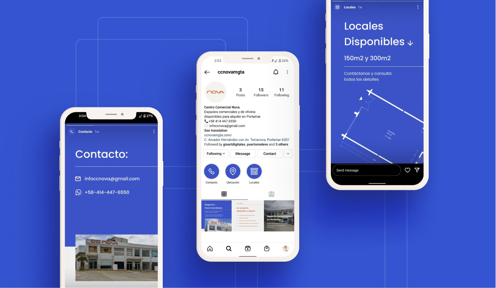
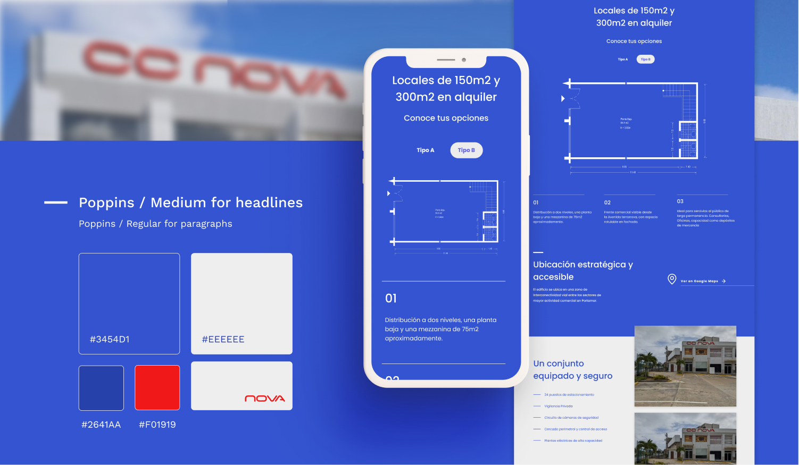
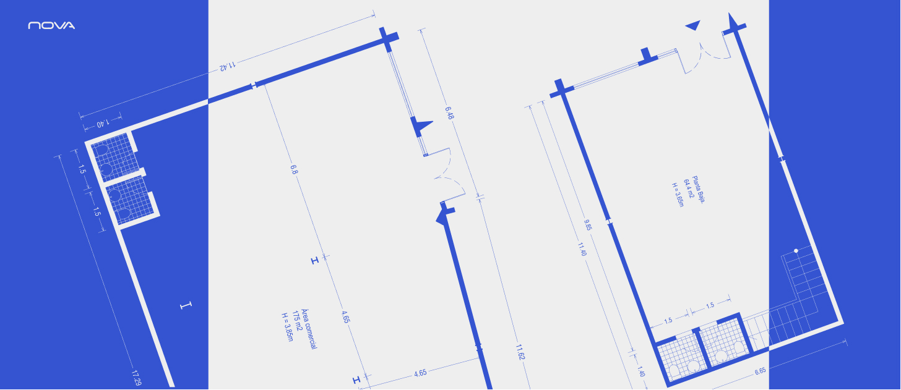

CC Nova
Web design / Webflow development
Role:
Freelance Designer and Developer
Company
CC Nova
ccnovamgta.com
Type
Landing page
retail rental spaces
Project overview
Figma + webflow
Static Landing Page
Web design / Webflow development
Role:
Freelance Designer and Developer
Company
CC Nova
ccnovamgta.com
Type
Landing page
retail rental spaces
Project overview
Figma + webflow
Static Landing Page
This one's a particular project. Since I'm the client. My family owns a small commercial building in Porlamar and I took the task of figuring out how to advertise it and position it digitally.
without any prior knowledge, we started with a minimal-effort essay on how to put ourselves "out there". This involved being present on the web, social media, and also Pyisical space.
We made a list of questions that would arise in the common client's mind and played the situation in our heads many times until we figured out a copywriting narrative that left no holes open.
The decision was to recreate what people would type in a search engine (I know, basic SEO). But making it fit into compelling pieces of text.
We had the CAD drawings for floor plans and elevations. If we showcased them in a simple manner, they would provide meaningful information to the user at a single glance. (floor area, maximum measurements, height, facade openings etc). so I turned them all into blue and white SVGS and integrated that graphic language into the general visual brand.
Since most of the client acquisition work was to be made locally, the website needed to be just a place for validation an legitimacy. We focused on creating a one-screen setup that allowed for a quick consultation.
This website was made in a week. We had already approved a Budget for printing large "FOR RENT" signs and we hand a very close deadline if we wanted to print the site's URL.
Webflow did the trick. Interestingly enough, the site is not hosted in webflow. Which is known to have high hosting fees. Instead, I managed to work around the program's limitations and exported the site to netlify, which reduced the original cost down to 10%. That's a very viable business template for small static landing pages.